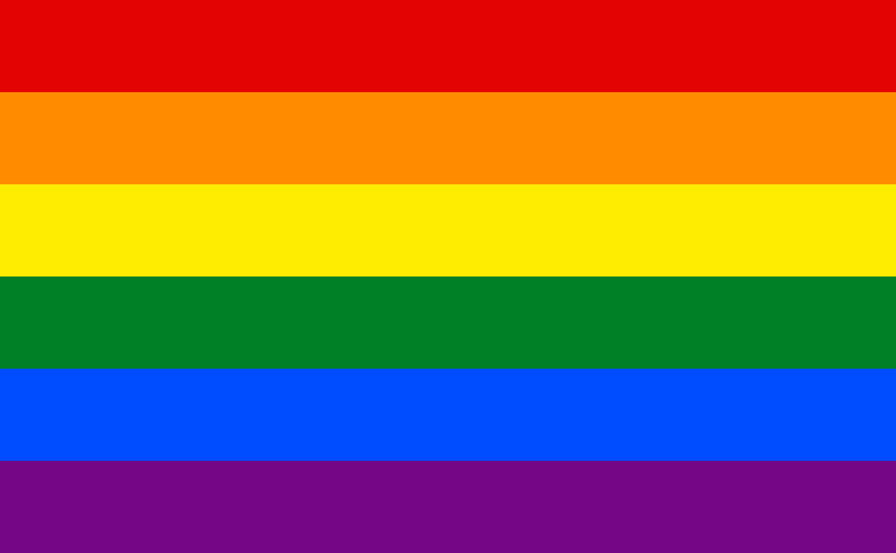

The Factors Increasing LGBT+ Identification
11 Aug 2022

The number of people identifying as LGBT+ has skyrocketed in recent years, polling done by Gallup found that 7.1% of Americans identify as LGBT+, up from 3.5% just 10 years ago. Here are some of the key factors driving this growth in identification.
Increased acceptance of LGBT+ people
Acceptance of LGBT+ rights has grown in recent decades; in 1996, according to Gallup only 27% of people supported same-sex marriage, now that number is 71%. This increase in acceptance is likely a big component in the increase of LGBT+ identification. Increased acceptance both increases how likely someone is to come out and decreases the denial and repression people may have towards their LGBT+ status, these changes lead to increased LGBT+ representation in polling.
Increased knowledge of LGBT+ identity
The increase in LGBT+ acceptance has also come with increased education on LGBT+ identity, people who know what they are feeling and can put a name to it are much more likely to identify as LGBT+. If someone was transgender before knowledge of being transgender meant was more widely known they would have a harder time describing what they're feeling and might write dysphoria off as something else like depression. This situation is less likely to happen now meaning more people will identify as LGBT+. Ease of accessing LGBT+ information is also a sizeable factor with the rise of the internet being a big part in people finding out who they are.
The LGBT+ Cascade effect
If one person identifies as LGBT+ others around them who are closeted will be more comfortable coming out, if these people come out, more people around those people will also be conferable coming out, this, along with other factors leads to a cascade of people coming out. The increase in LGBT+ identification has in part been driven by itself.
Prevalence of bi/omnisexuality
Omnisexual (at least for this article) means you're attracted to all genders but have a preference. It seems like the number of people who are attracted to all genders but have a preference for the opposite (omnisexuality) is higher than many expected. For example, surveys by YouGov that asked people to put themselves on the Kinsey scale found that many people were mostly but not completely straight, many of these people might go on to identify as bisexual.
Environmental factors and sexual fluidity
People's sexualities can be fluid and might influenced by environmental factors. This fluidity is often not that big with one study finding women only moved about 1 point on the Kinsey scale. Despite this, these changes might be enough for a straight person to become and subsequently identify as bisexual/omnisexual. If environmental factors that change sexual orientation increased over time this might explain some of the increase in LGBT+ identification. Some think one factors might (or might not) be gender nonconformity, exposure to LGBT+ content has also been suggested though no research backs this up (if true, would not constitute people being turned gay by the media, remember that the changes brought by sexual fluidity are often small). This possible factor is often controversial so more research is needed to come to a conclusion.
Other observations
There are some observations we must talk about when reasoning about LGBT+ identification. One is age, younger people are more likely to identify as LGBT+, this is likely because younger people tend to be more LGBT+ accepting.
Another is the prevalence of bisexuality, bisexuality seems to be quite prevalent among LGBT+ people and particularly young LGBT+ people. This seems to support the last 2 factors discussed being true, the age differences might be explained by older bisexual people being able to pass as straight or younger people being more open to identifying as bisexual.
The last observation is that LGBT+ polling is often quite inaccurate. If someone is closeted, repressing/denying their identity, or is identifying as one thing while experiencing another thing they might give an incorrect answer. A way to somewhat fix this problem would be to ask about what gender(s) someone is attracted to rather than what they identify as. Surveys should also add asexuality as an answer so aces aren't doomed to selecting the "other" option.
Conclusion
In conclusion, the increase in LGBT+ identification is likely being driven by many factors from increased education to the prevalence of certain identities.
https://news.gallup.com/poll/389792/lgbt-identification-ticks-up.aspx
https://news.gallup.com/poll/1651/gay-lesbian-rights.aspx
https://today.yougov.com/topics/lifestyle/articles-reports/2019/06/20/kinsey-scale-sexuality-millennials-2019-poll
https://yougov.co.uk/topics/lifestyle/articles-reports/2015/08/16/half-young-not-heterosexual
https://journals.sagepub.com/doi/10.1177/1529100616637616